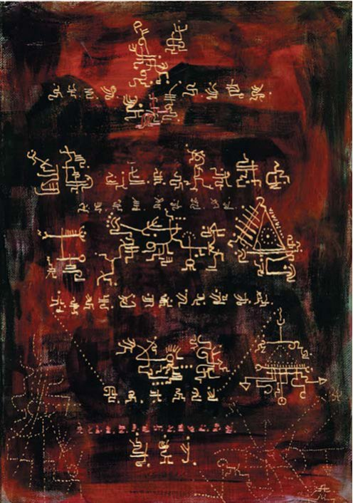
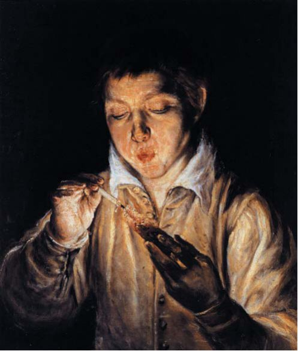
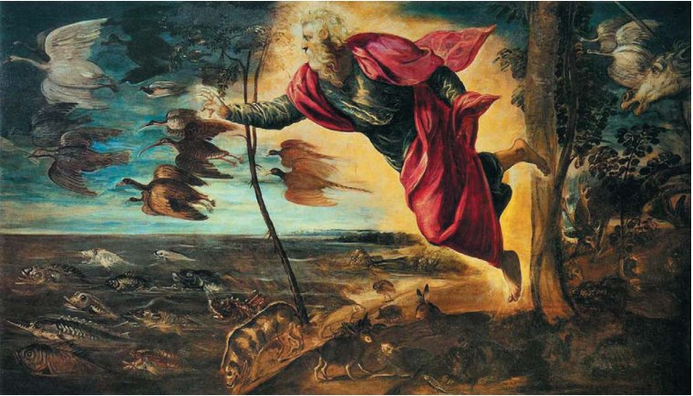

Точка зору · журнал «ДентАрт» 2013 №2 (71)
Філотаксис і біомеханіка зубів. Частина I
PHYLLOTAXIS AND BIOMECHANICS OF TEETH. PART I
«Я маю намір писати про природу. Нехай думки, що виходять з-під мого пера, ідуть у тому порядку, в якому самі об'єкти відкрилися мені в роздумах; такий порядок краще передасть рух мого розуму і мою логіку».
Дені Дідро, «Думки до тлумачення природи»
Ключі Творця
У безмежному космічному просторі, в пишності флори і фауни нашої планети бачимо таку гармонію і витонченість, що вони не перестають захоплювати і дивувати нас, вражаючи уяву нерозривною єдністю всіх немислимих форм матерії. Так було, так є і так буде, доки існує на землі Людина, яка в нескінченному прагненні до пізнання ринулася навіть до далеких зірок у пошуках «ключів Творця», здатних розкрити всі таємниці світобудови. За словами Олени Реріх, тільки вперте упередження заважає людям зрозуміти дійсність. А зрозуміти — означає багато чому навчитися. Адже людство дуже давнє, і протягом століть всілякі іскри мудрості проливалися на Землю, але кожне коло має свій ключ. Безліч порожніх, нікчемних міркувань заповнюють людську свідомість, але найдивовижніше вислизає.1-5

Згадаємо, що слово «космос» походить від грецького «kо’smos» і перекладається як порядок, форма, устрій, світ або Всесвіт. І в далекому минулому Всесвіт уявлявся нашим предкам великим небесним будинком. Видатний учений Костянтин Ціолковський (1857-1935) одним з перших окреслив основні напрямки у вивченні проблеми Живого Космосу. Усюди, де тільки можна, великий мислитель проводив ідею життєсутності Світобудови: «... Всесвіт у математичному сенсі весь цілком живий, а в звичайному сенсі нічим не відрізняється від тварини».
Питання про влаштування Всесвіту невіддільне від питання про його походження. Згідно з китайською філософією, «є щось, що існує перше Неба і Землі, що не має форми, поховане в безмовності. Воно — володар усіх явищ і не підвладне змінам пір року». Отже, у стародавній філософії поняття форми мало значення діяльної сили, того, що справді існує, а матерія — лише доповнення, необхідний предмет; таке значення поняття форми малося і у Платона, а особливо у Арістотеля. Таким чином, форма організовує матерію, оскільки є якесь внутрішнє начало, що веде об'єкт до його досконалості. У свою чергу для функції потрібна структура, втілена у форму. Тому Арістотель і Бога називає чистою формою, чистою діяльністю.
Тепер спробуймо філософські уявлення пояснити за допомогою понять про форму загальноприйнятою мовою поглядів у сучасній біофізиці: сили, що формують зародок при онтогенетичному розвитку, генеруються цитоскелетом і описуються механохімічними явищами. До таких же явищ належить безліч біологічних процесів: рухи рослин; уся сукупність рухів під час мітозу і мейозу; рухи всередині неподільних клітин; м'язові скорочення та ін.5, 6 Відтак вивчення механохімії цитоскелету організму або окремого органу має основоположне значення для розуміння всіх процесів індивідуального розвитку і функціонування.
На рубежі XVI-XVII століть англійський філософ-матеріаліст Френсіс Бекон, пізнаючи дослідним і логічним шляхом глибокі зв'язки природи, закони явищ, властивості речей, визнавав, що форма не що інше, як Закон Природи. Гадаю, він визнавав і умовиводи своїх попередників, які задовго до нього дійшли такого ж простого і ясного висновку. До них належать згадувані раніше Конфуцій (V ст. до н. е.), Аль-Фарабі (IX ст.) та інші стародавні мислителі, які багато в чому випередили свій час. Поклавши початок науковій революції, Ф. Бекон зізнавався: «У це людське царство знання, як і в Царство Небесне, ви не зможете потрапити, доки не навернетесь і не будете як діти». З цього приводу Олена Блаватська (1831-1891) зауважила: «Сучасна наука є лише перекручена Стародавня Думка».7, 8 А «древнє» — це ім'я не застарілого, не проминулого, а лише «навіки встановленого».9
Ситуація в сучасному світогляді складається таким чином, що багато вчених стали відповідально заявляти: необхідна не тільки і не стільки зміна старих парадигм, але пошук і формування нової синтагми (з грец. букв. «разом побудоване», «поєднане»). Водночас розвиток і сама генеза поняття езотеризму як науки лежить в ракурсі зміни парадигм.

Відомий американський учений Томас Кун, автор книги «Структура наукових революцій», переконаний: «Формування парадигми і поява на її основі більш езотеричного типу дослідження є ознакою зрілості будь-якої наукової дисципліни». З точкою зору Т. Куна узгоджується і думка російського вченого-геофізика, доктора геолого-мінералогічних наук, професора, члена РАПН А. М. Городницького, який вважає, що «докази існування Атлантиди можуть змінити концептуальне розуміння розвитку природи і життя на Землі...»10 І знову, немов хитромудрий мереживний узор, переплітаються минуле і сьогодення. Згідно з духовно-естетичною концепцією Миколи Реріха, «прекрасні голоси давнини зводять велику бувальщину».
«Ми повинні дбайливо ставитися до спадщини невідомої, але такої, що змушує звучати серця наші». Водночас «труднощі пізнання до певної міри залежать від обмеженості земної мови», — доповнює думку дружина й однодумець Миколи Реріха Олена Реріх у своїй праці «Світ Вогненний» (1935).
Ми стали шукати дорогу в наше минуле тоді, коли, як нам здавалося, уже вийшли «на світло», але не стільки забули, скільки не бачимо, звідки ж прийшли. «Перебуваючи на світлі, в темряві нічого не розгледиш. Перебуваючи ж у темряві, бачиш усе, що на світлі», — говорить китайська мудрість. І ніби продовжуючи цю думку, римський поет і філософ Тит Лукрецій Кар (бл. 99-55 рр. до н. е.) говорить нам у поемі «Про природу речей», що все це можна осягнути, бо одне за одним поступово з'ясовується все. «Не збиваючись темної ночі з шляху, ти пізнаєш усі таємниці природи, і постійно одне запалювати буде світоч іншому».11
*Френсіс Бекон (1561-1626 рр.) був першим філософом, який поставив перед собою завдання створити аналітичний науковий метод дослідження явищ природи, він зіграв позитивну роль у досягненнях природознавства Нового часу. «Людина — служитель і тлумач природи» (Ф. Бекон).
«Комусь — казки. А комусь — дійсність. Хтось злякається. А хтось розгорне сторінки книги принесеної».
Микола Реріх, «Брама в майбутнє»
Пілігримів мовчазні лики
Неодноразово ми переконуємося в тому, що в нинішній історичний момент усе наполегливіше дає про себе знати прагнення філософів і вчених знайти по можливості міцну, стійку і незмінну в часі основу і для наукового пізнання, і для практичної орієнтації людської діяльності. «Оскільки знання, і (в тому числі) наукове пізнання, виникає при всіх дослідженнях, які охоплюють витоки, причини та елементи (…), то зрозуміло, що в науці про природу треба спробувати визначити передусім те, що належить до витоків», — міркує на безсмертних сторінках своєї «Метафізики» давньогрецький філософ і учень Платона Арістотель (384-322 р.р. до н. е.), вважаючи одними з основоположних причин матерію — «те, з чого» і форму — «те, що», а різноманіття речей і явищ — результатом їх злиття. Нагадаємо, що філософія Арістотеля — це завершальний етап трьох сторіч розвитку давньогрецької думки, який у певному сенсі немовби підбиває підсумок цього розвитку, створюючи основу для низки наук — логіки та онтології, фізики, біології та психології, етики і поетики. При цьому Арістотель успадковує і основну тему роздумів давньогрецьких мудреців: що таке буття? Що значить «бути»?
Доречно буде згадати і рядки зі Святого Письма про першу сходинку до вищого пізнання. Вона, як вважає Св. Матвій, у здивуванні: «хто шукає, нехай не спочиває,... доки не знайде; а знайшовши, здивується...». Так вчив і Платон: «Будь-якого пізнання початок є здивування».12, 13 А Демокріт вважав, що «прекрасне осягається шляхом вивчення і великих зусиль».
Тепер на мить уважно прислухаємося і до ледь чутних доторків крил істини в заповіді Конфуція, посланій нам через тисячоліття: «вивчати якомога більше видів птахів, тварин, трав і дерев».14 Мимоволі складається враження, що це крила казкової «жар-птиці», котра, як і раніше, літає в небесах, час від часу опускаючись на землю і осяваючи своїм чистим сяйвом всю тонкість, мудрість і красу думки древніх як подальше нам напуття і світло в туманній неясності прийдешнього часу. Напевно, так бувало й раніше, коли людство опинялося на переломних моментах історії, переживаючи незриму таємницю духовного переродження, звільняючись із тісного кокона проминулих століть, як це відбувалося, наприклад, в епоху Відродження і потім вже на її основі дещо пізніше в епоху Просвітництва.
Прихильник ідеї існування єдиної матеріальної субстанції, французький лікар, філософ і просвітитель Жюльєн Офрі де Ламетрі у творі «Людина-рослина» (1748) писав: «Подібність рослинного і тваринного царств змусила мене виявити в першому з них основні елементи, що містяться у другому. Якщо ж моя уява деколи дає собі волю, то її гра відбувається, якщо можна так висловитися, на арені істини». Таким чином, Ламетрі першим з філософів висловив думку про можливість походження людини від тварин. Вважається, що серед його робіт особливий інтерес з наукової точки зору викликає велика праця «Міркування щодо практичної медицини» (1743).15
Звичайно, у вдумливого і терплячого читача все ж може виникнути резонне запитання: чому, обговорюючи настільки, здавалося б, вузьку тему, як будова тканин і органів щелепно-лицьової системи і організму людини в цілому, автор постійно звертається до різних галузей науки, історії, релігії, фольклору і т. д.? На це справедливе запитання, як мені здається, найвичерпнішу відповідь дає такий чудовий вислів: «Головна мета науки — добувати істинне і повне знання про світ, і воно може принести користь людям лише тою мірою, якою наближається до цієї мети. Найважче тут — повнота».16 А повнота і багатство того, що відкривається за теорією, — це той шлях, де, згідно з Реріхом, з'єднується творчість і свобода думки. З нами слова мудрості: «Шукаю шлях, відступаючи все більше всередину». Тому ми в нашому дослідженні будемо продовжувати відштовхуватися від поняття форми, яке передбачає єдність внутрішньої конструкції і зовнішньої поверхні об'єкта. Тлумачний словник живої великоросійської мови Володимира Даля дає нам ще одну підказку, пояснюючи слово «форма» і у значенні «зразок» або «приклад». Таким чином, на поняттях «форми» і «матерії» виявляються загальні закони Природи, як і те, що в них, мабуть, може бути закладена і важлива складова «формули життя».
«Ми ледь-ледь починаємо розпізнавати одноманітність природи, цими ще слабкими променями світла ми завдячуємо вивченню природної історії. Але до якого ступеня пролягає ця однаковість?.. Спробуймо бачити тільки те, що є, не тішачи себе гадкою, що ми бачимо все...».
Жюльєн Офре де Ламетрі, «Людина-рослина» (1748)
Прийнято вважати, що зародження наук належить до найдавніших часів, відомих історії, воно бере свій початок від цивілізації Шумер, але чи так це насправді, приховано від нас нездоланною стіною минулих тисячоліть, що неприступно зберігають свої сокровенні таємниці. Шумерські глиняні таблички залишаються найбільш ранніми писемними джерелами з усіх виявлених. Як уже зазначалося, усе більше фактів говорить про необхідність перегляду офіційно сформованої хронології людства, і вони здатні змінити наше світорозуміння... «Знання заховано в кожній речі. Колись світ був бібліотекою»; «колись був» — чуємо і відчуваємо суху гіркоту безповоротної втрати у словах індіанського вождя, але чи здатні ми зрозуміти, про що йдеться? Австрійський філософ, езотерик, засновник антропософії і нового підходу до медицини Рудольф Штайнер (1861-1925) у літописі світу «Хроніки Акаші» (1904-1908) докладно описує, як наші атлантичні предки своїми відчуттями слуху і дотику сприймали глибокі таємниці природи, які вони вміли свідомо тлумачити. У шумі вітру, в шелесті дерев розкривалися їм закони, мудрість природи. Вища мудрість опинилася похованою під обривками старих книг, які ще зберігають запах друкарської фарби та «несмак порожнечі». «Легко дати пораду читати відкриту книгу. Книга мудрості прихована в явищах життя, — підказує Микола Реріх. — Ухиляйтеся від тих, хто не чує, обійдіть тих, хто не бачить», бережіть чистоту духу і помислів у служінні Добру і Світлу. Тому «знаючі не говорять», — тихо відповідає Лао-Цзи (VI-V ст.ст. до н. е.). Не говорять, тому що не почують чи не зрозуміють? А можливо, не говорять тому, що той, «хто зміг у все умом своїм проникнуть, той істину стрічає криком туги, знання йому — не дерево життя», — робить висновок великий поет Джон Гордон Байрон («Манфред», 1817).
![Реріх С.М. (1904-1993). Священні слова. Слова учителя (1944). Карнатака Читракала Паришатх, Бангалор, Індія. «Багато століть тому були записані слова мудрості. Але скільки ж тисячоліть до цього вони жили в усному переданні! І як не дивно, саме усна форма може бути більш збережена, ніж ієрогліфи сувоїв» (М. Реріх. БРАМА В МАЙБУТНЄ. Шрі Рамакрішна, 1935). «Не слід боятися торкати старі книжкові полиці. Не слід побоюватися зближувати і зіставляти предмети старовини в нових поєднаннях» (М. Реріх. БРАМА В МАЙБУТНЄ. Кам'яний вік, 1935).](images/post71-003.jpg)
На думку Р. Штайнера, духовним авторитетом в атлантичну епоху «вважався не той, хто багато вчився, а той, хто багато пережив і міг багато чого пам'ятати... Довіряли тільки тому, хто міг оглянутися на багаторічний досвід».
Очевидне лише те, що з часів останнього Птолемея (138 р. до н. е.) починається поступова зупинка, а потім і падіння творчого наукового духу. За весь подальший період розвитку людства лише до середини XVIII століття світ ознаменувався багатьма важливими відкриттями, і особливо тими, які були зроблені при дослідженні живої природи. Цей переломний час, що одержав назву епохи Просвітництва, — одна з ключових епох в історії європейської культури, пов'язана з розвитком наукової, філософської і суспільної думки. Відзначимо лише деякі з відкриттів того часу. Французький натураліст і фізик Р. Реомюр (1683-1757) у своїх «Мемуарах з історії комах» (1734-42) уперше в науці описав відростання у річкового рака нової клешні на місці втраченої (що відбувається подібно до того, як у дерева на місці відрізаної гілки відростає нова) і назвав це явище регенерацією. У 1741 р. Ж.-Е. Геттар (1715-1786), французький мінералог, натураліст і лікар, виявив відростання втрачених щупалець у морських зірок. Ш. Бонні досліджував регенерацію у черв'яків, а також відкрив партеногенез — розмноження тварин безстатевим шляхом. А. Пейссоннель виявив, що корали, які вважалися морськими квітками, — продукт життєдіяльності тварин. Особливо вразило всіх відкриття А. Трамбле (1740). Вивчаючи поліпи — прісноводні організми, які завжди вважалися рослинами, він виявив, що хоча в деяких аспектах вони і подібні до рослин, але це, безсумнівно, тварини: вони пересуваються, живляться, реагують на подразнення, як тварини. У цих тварин Трамбле знайшов дивовижну особливість: якщо поліп розрізати на частини, то кожна з них незабаром перетворюється на самостійну істоту, самостійний поліп.
Якщо названі відкриття засвідчували наявність у деяких тварин рис, притаманних рослинам, то Хейзл у «Статиці рослин» (1727) описав свої експерименти, які доводять, що рослини мають властивість, притаманну тваринам: вони дихають, їхні органи дихання — листки, в яких цей процес відбувається під дією сонячного світла. Слід згадати маловідому роботу Б. де Майє «Телліамед, або Бесіди індійського філософа з французьким місіонером про зменшення моря, про утворення суші, про походження людини» (1748), де на підставі знахідок, які свідчать про те, що багато ділянок нинішньої суші були колись морським дном, розвивається концепція зародження життя в морях і подальшого ускладнення організмів у міру оголення морського дна і переходу організмів, що живуть у воді, до наземного життя.
![Рукопис Войнича — таємнича книга, написана близько 600 років тому невідомим автором невідомою мовою з використанням невідомої абетки. Книга названа на честь американського книгопродавця литовського походження Вілфріда Войнича (чоловіка відомої письменниці Етель Ліліан Войнич, авторки «Овода»), який придбав її у 1912 році. Тепер вона зберігається в Бібліотеці рідкісних книг Байнеке (Beinecke Rare Book And Manuscript Library) Єльського університету. Таємничий текст супроводжується не менш загадковими і дивовижними малюнками, що зображують людину і птахів у тісному зв'язку з рослинним світом.](images/post71-004.jpg)
Ботанік Х.-К. Шпренгель (1750-1816) опублікував у 1793 році одне з ранніх, але досить значних досліджень у галузі анатомії і фізіології рослин, що випереджало уявлення вчених тої доби. Приблизно в той же час французький письменник, філософ і драматург Д. Дідро (1713-1784) у своїх роздумах над сенсом буття наводить вагомі аргументи щодо того, що поняття матерії якісно більш багатоманітне, ніж уявляли натурфілософи. Задовго до Ч. Дарвіна в роботі «Думки до тлумачення природи» (1745) Дідро висловлює здогад про біологічну еволюцію від первісного прототипу всіх живих істот, що існував колись (рис. 3).17 Але ще до Дідро на цей шлях став французький лікар і філософ-матеріаліст Ж. О. Ламетрі (1709-1751), автор науково-філософських творів «Людина-машина» та «Людина-рослина».15 Аналізуючи матеріали, нагромаджені фізиками, хіміками, ботаніками, анатомами, фізіологами, лікарями, він доводить, що ці дані свідчать про відсутність прірви між людиною і тваринами, з одного боку, і рослинами — з другого. Усе це різні прояви єдиної субстанції; їхнє різноманіття визначається різноманіттям форм організації матерії.
Відомий нам з історії давньоримський політик і філософ Марк Тулій Цицерон (106-43 рр. до н.е.) вважав, що «все, що відбувається, має свої причини в природі. І можливо, що події будуть суперечити звичайному перебігу подій, але суперечність їх природі неможлива».
«Мабуть, природі подобається урізноманітнювати один і той же механізм незліченними способами».
Йоганн Вольфганг Гете
Зворотний бік світу
У нашому дослідженні важливо звернутися до основоположника науки про форму, морфології (термін «морфологія» вперше прозвучав у 1817 р.) живих організмів, видатного німецького поета, філософа і природодослідника Й. В. Гете. Вивчаючи утворення і перетворення органічних істот, Гете стверджував, що Природа саме тому так зручно змінює форму тварин, що ця форма складена з дуже великого числа частин, і тому природі при творенні не доводиться переплавляти великі маси. Гете виступав проти усталених поглядів свого часу на методологію розгляду форми тіла людини з точки зору класичної анатомії — «шлях, яким навіть найкращі і найточніші зусилля навряд чи можуть привести далі, ніж до емпіричної номенклатури». В одній зі своїх статей він звертається до наукової громадськості із запитанням: «Хіба мистецтво розчленування не досягло найтонших спостережень, хіба воно не простежило подільність нервів до нескінченності; невже ми не повинні поставитися з такою ж увагою до підрозділу кісток, які, можливо, мають ще більший вплив на утворення форми?»18
З цієї позиції зберігає свою актуальність не лише анатомічне вивчення структурних елементів скелету людини, але й щелепно-лицьової системи і організму людини в цілому. Це обумовлено тим, що саме поняття «фрактал» ввів у 1975 році Бенуа Мандельброт — французький математик, засновник і провідний дослідник у галузі фрактальної геометрії. Фрактали (від лат. fractus — зламаний, розбитий) — це об'єкти, які мають дві найважливіші ознаки: ламаність і властивість самоподібності (або масштабної інваріантності). Фрактали з найбільшою очевидністю можна побачити у формоутвореннях живої природи: черепашках, гілках дерев, листках і пелюстках квітів, ландшафтах (морські узбережжя і русла річок), легенях людини, обрисах хмар. Фрактальна геометрія — це витончений та інформаційно-компактний спосіб опису складного. Фрактали відкривають простоту складного у матеріальному світі об'єктів, що нас оточує. Геометричні фрактали застосовуються при побудові ландшафтів, моделей біологічних об'єктів та ін. Як зазначає К. Фрітьоф (2003), «концепція фрактальної розмірності, яка спочатку з'явилася як суто абстрактна математична ідея, перетворилася з часом на потужний інструмент аналізу складності фрактальних форм». Наприкінці 1950-х Мандельброт почав вивчати геометрію найрізноманітніших нерегулярних природних феноменів, а в 60-і роки він усвідомив, що у всіх геометричних форм, які він розглядав, є дивовижні спільні особливості. На підставі цього він створив так звану фрактальну геометрію, щоб описувати та аналізувати складність нерегулярних форм у навколишньому світі природи. Найбільш вражаюча властивість цих «фрактальних» форм полягає в тому, що ціле подібне самому собі на всіх рівнях обраного діапазону. У природі зустрічається безліч прикладів самоподібності. Фотографії дельти річки, крони дерева або розгалуження кровоносних судин можуть виявляти схожість у поєднанні ознак між собою. Фрактали дуже різноманітні і виконують функції модулів. Таким чином, фрактальна геометрія, яка набула значного поширення в науці з метою опису багатьох фізичних, природних явищ, а також різних форм, має у своїй основі більш глибокі історичні корені, що переконує у правильності твердження великого німецького поета, філософа, вченого, що «швидкого прогресу всієї науки можна очікувати тільки на цьому шляху».
Матриці світобудови
«Природа вивищується над Розумом і Знанням».
Жюльєн Офрі де Ламетрі
Незважаючи на те, що багато сторінок із палеонтологічного літопису Землі не збереглося, у XIX сторіччі такі натуралісти, як Теодор Шванн (1836), Жан Батист Ламарк і Чарльз Дарвін (1859), з'ясували, що всі живі істоти на Землі пов'язані між собою справжнім, хоча і віддаленим спорідненням. Виявити між ними приховані зв'язки вдалося багато в чому завдяки тому, що виникнувши на Землі у вигляді однієї або небагатьох найпростіших живих форм, вони поступово все ж ускладнювалися більш морфологічно, ніж фізіологічно. Сучасна наука, як і раніше, базується на еволюційній теорії Ч. Дарвіна, в основі якої лежить боротьба за існування, а природний відбір з мистецтвом і терплячістю майстра неминуче призводить до утворення нових особливостей організму, тобто нових видів. Види, у свою чергу, стаючи все різноманітнішими і досконалішими, дають початок формуванню нових родів. Роди, розвиваючись далі, утворюють нові родини, останні при подальшій еволюції формують ряди, класи та розділи рослинного або тваринного світу. Однак вирішувати питання про походження різних тварин і рослин на підставі їхньої будови — далеко не легке завдання, хоча, як було сказано, вони утворюють ланцюги безперервної спорідненості. Як зазначає М. К. Реріх, «чудовий учений Індії сер Дж. Боше в таких же шляхах дослідження відобразив пульс рослин, виявив навіть для випадкового ока, як реагують рослини на біль, на світло, як позначається на пульсі їх поява навіть найменшої віддаленої хмаринки».20
Не менш дивовижні приклади розумного прояву Природи ми можемо знайти в незвичайному філософському есе «Розум квітів» (1907) бельгійського письменника, драматурга і філософа Моріса Метерлінка (1862-1949). У цьому творі наводяться найтонші спостереження за життям рослин, які служать основою для роздумів і більш глибинного розуміння зв'язку людини і Природи, в якій їй належить почерпнути вищу мудрість: «Якщо трапляються рослини і квіти незграбні і невезучі, то немає жодної, зовсім позбавленої мудрості і винахідливості, а щодо механіки, балістики, повітроплавання і спостережень над комахами вони часто перевершують винаходи і знання людей. Незбагненно, що в них приховано стільки розуму, стільки розуміння кінцевої мети їхнього існування. Замислимося над тим, що, вперше з'явившись на нашій землі, вони не мали перед собою жодної моделі, яку могли б наслідувати. Ознаки обережної живої думки спостерігаються не лише в насінні або квітці, але й в усій рослині: у стеблі, листі, коренях, якщо захотіти на мить схилитися над їх скромною роботою. Ми уявляємо, що найменша наша ідея створює нові комбінації і співвідношення у світі, який нам здається несвідомим і позбавленим розуму. Але якщо ближче придивитися до дійсності, то виявиться більш правдоподібним, що ми нездатні створити що б то не було. З'явившись на цій землі останніми, ми тільки відшукуємо те, що вже до нас існувало, і, немов здивовані діти, вдруге проходимо дорогу, яку життя вже зробило до нас».
Але якщо фізіологічно всі живі форми еволюційно змінювалися мало, то виходить, у них повинні були зберігатися хоча б загальні риси процесів, що регулюють їхню життєдіяльність?21 Такий здогад висували багато хто, в тому числі і Д. Дідро: «Матриці — чи є вони основою форм? Що таке матриця? Чи є це реальна істота, що існувала раніше? Чи це тільки мислима межа енергії живої молекули, пов'язаної з мертвою або живою матерією, межа, визначена відношенням енергії в повному сенсі цього слова до усіляких видів опору? Якщо це реальна істота, яка і раніше існувала, то як вона утворилася?»17
«Джерельцем чистим тихо думка плине,
З терпінням Сфінкса ти міркуй над таємницями віків,
Свій зір спрямуй до зір, хай птахом в небо лине,
І пізнавай, хто ти, між незліченності світів!»
Олександр Постолакі

Далі буде…
Частину II читайте у статті «Філотаксис і біомеханіка зубів. Частина II» («ДентАрт» №4/2013), частину III — у статті «Філотаксис і біомеханіка зубів. Частина III» («ДентАрт» №2/2015), частину IV — у статті «Філотаксис і біомеханіка зубів. Частина IV» («ДентАрт» №3/2015).